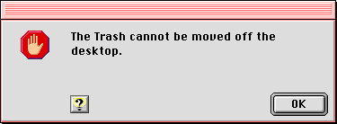

Stop Alert Boxes
The stop alert box is the third, and most severe, level of alert box. The stop alert box icon is the octagon with an open hand, which resembles a stop sign in most locales. (If this icon is offensive in a region or country where you want to market your application, it can be replaced by a more acceptable icon through the Mac OS localization process.)Stop alert boxes notify the user that an action cannot be completed. Stop alert boxes generally have only an OK button, plus an optional help button. As with the note alert box, the user can only acknowledge the warning and dismiss the alert box.Figure 3-8 shows an example of a stop alert box.
